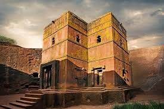
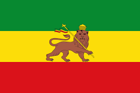
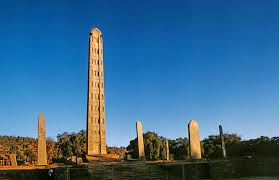
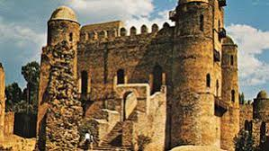
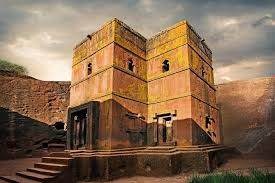
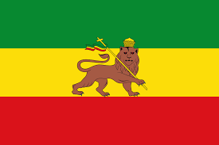
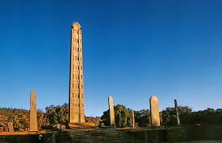
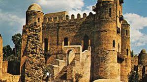

Ethiopia,in the Horn of Africa, is a rugged, landlocked country split by the Great Rift Valley. With archaeological finds dating back more than 3 million years, it’s a place of ancient culture. Among its important sites are Lalibela with its rock-cut Christian churches from the 12th–13th centuries. Aksum is the ruins of an ancient city with obelisks, tombs, castles and Our Lady Mary of Zion church
The culture of Ethiopia is diverse and generally structured along ethnolinguistic lines. Ethiopian culture is a tapestry woven with diverse traditions, reflecting the country's rich history and unique blend of influences. The country's Amharic-speaking majority at its core, Ethiopian culture encompasses a multitude of ethnic groups, each contributing distinct customs, languages, and artistic expressions. The Amhara people, who predominantly speak Amharic, have played a significant role in shaping Ethiopia's cultural identity, from their traditional music and dance Eskista to their cuisine and religious practices. Additionally, the Tigrayan, Somali, Oromo, Afar, Nuer, Anuak, and ethnic groups have also left indelible marks on Ethiopian culture. Their languages, traditions, and artistic expressions have contributed to the colorful mosaic of Ethiopian heritage. Furthermore, Ethiopia's interactions with its neighboring countries, such as Egypt, Sudan, Kenya, and Somalia, have infused its culture with diverse elements, highlighting its position as a crossroads of cultures where diversity thrives and influences merge, creating a dynamic and vibrant cultural landscape
 







Ethiopa map
The Ethiopian map is a geographical representation of the country of Ethiopia, located in the Horn of Africa. It is bordered by Eritrea to the north, Djibouti and Somalia to the east, Kenya to the south, South Sudan to the west, and Sudan to the northwest.
© 2015 - 2024 Biniyam M@ Global Inc.